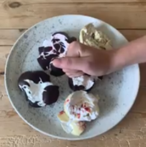
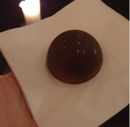
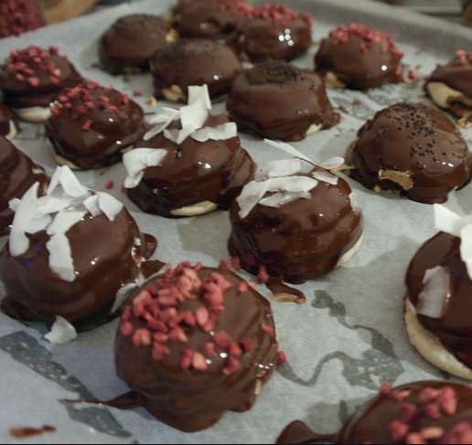
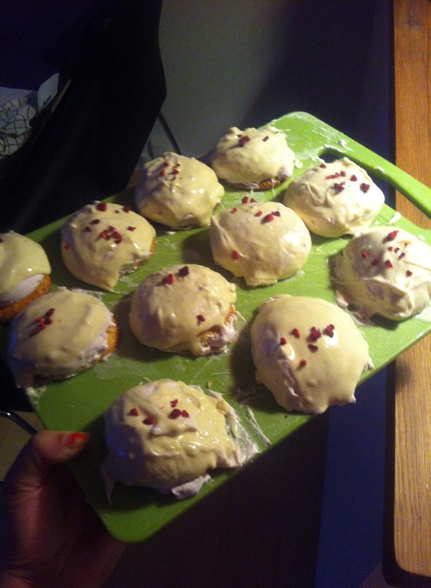

Top Fem Flade Flødeboller
På denne webside kommer jeg til at rate det top fem beste flade flødeboller på deres udsenne. Der er også en opskrift.
På en femte plades har vi Facebook flødeboller.
Jeg vil sige det er nogle fine flødeboller men det er lidt snyd af manen smadre dem.
På en fjerde plades har vi fldebollen.
Den er for fine til min smage.
På en tredje plades har vi spisbedre.

Den er også fine men den her er gliter på.
På en anden plades har vi Pinimg.
De er super fine men det er ikke så flade.
HM Labron
Og på en første plades har vi Bloggersdelight flødeboller.
Jeg bliver så glad nå jeg kigger på dette billde så det er derfor jeg har valgt det. Bloggersdelight har virkeilg lade deres store men den her. Den er semplthen perfet at ord ikke kan forklar. Så derfor har Bloggersdelight vundet denne titel.
opskrift
HjemIngredienser
Marcipanbunde 125 g Marcipan Flødebolleskum 1½ dl Æggehvide (ca. 140 g) 25 g Sukker 250 g Sukker (ca. dl) 125 g Glukosesirup ¾ dl Vand ½ tsk Vaniljepasta 500 g Finthakket mørk chokolade - smeltet Pynt Finthakkede usaltede pistacienødder, frysetørrede bær, guldstøv, tørrede blomster eller lign.
Sådan gør du
Marcipanbunde Rul marcipanen ud til en firkant (ca. 15 x 20 cm). Udstik 12 cirkler (a ca. 5 cm i diameter). Læg marcipanbundene på en plade med bagepapir og bag dem til kanten begynder at blive gylden ica. 7 min. ved 175° - varmluft. Lad dem køle af på en bagerist. Flødebolleskum Pisk æggehvider og sukker skummende i en røremaskine. Bring sukker, glukosesirup, vand og vaniljepulver i kog i en lille tykbundet gryde. Mål med et sukkertermometer temperaturen, den skal være 117°. Hæld sukkermassen i en tynd stråle i æggehviderne under konstant piskning ved høj hastighed. Pisk i 5-7 min. til skummet er fast og sejt. Fyld skummet i en sprøjtepose med tylle. Sådan samler du flødebollerne Sprøjt toppe på marcipanbundene - næsten helt ud til kanten. Det er lettest, hvis bundene står på en gummimåtte eller en hårdt opvredet ren klud, så de ikke flytter sig. Lad toppene stå ca. 1 time ved stuetemperatur, så overfladen tørrer let. Hæld den smeltede chokolade i en cylinderformet beholder, fx et lidt højt glas. Chokoladen må ikke være for varm. Dyp en flødebolle i chokoladen, ryst forsigtigt overskydende chokolade af, vend den hurtigt rundt og pynt den, mens chokoladen er våd. Lad den stivne på et stykke bagepapir. Fortsæt med de resterende flødeboller.